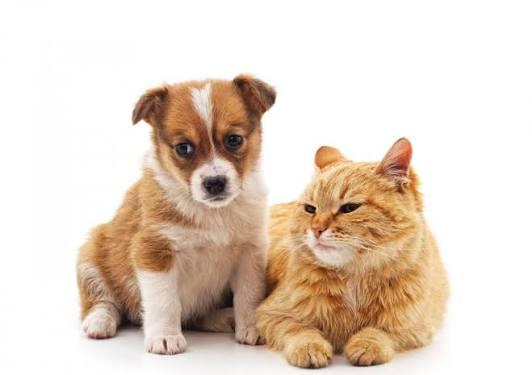

Patas que Acolhem
Um lar pode mudar uma vida.
A Patas que Acolhem atua no resgate e cuidado de cães e gatos em situação de abandono, buscando oferecer proteção, tratamento e novas oportunidades por meio da adoção responsável.

Quem somos
Somos uma organização dedicada à proteção animal, oferecendo acolhimento e cuidados aos animais que precisam de ajuda. Nosso objetivo é promover o bem-estar animal e incentivar a adoção responsável.